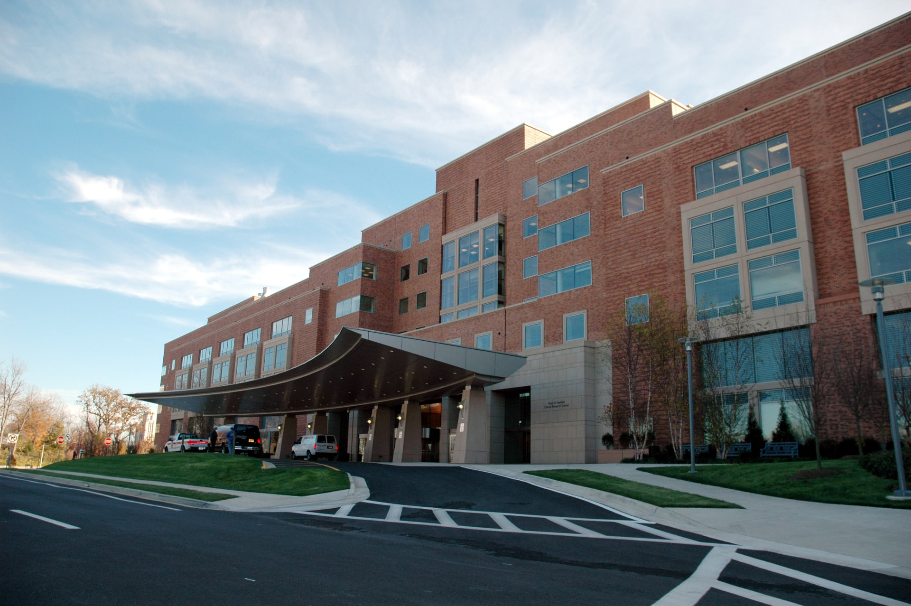
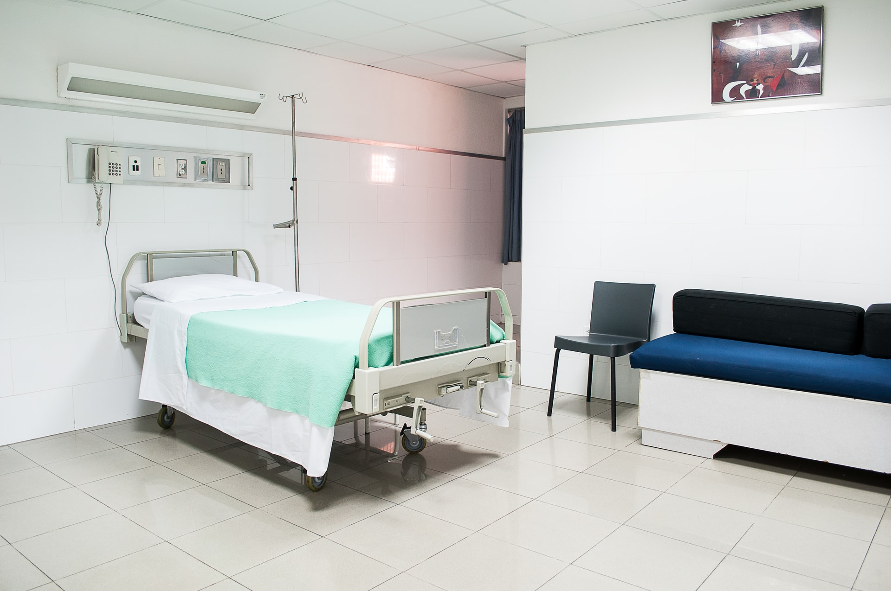
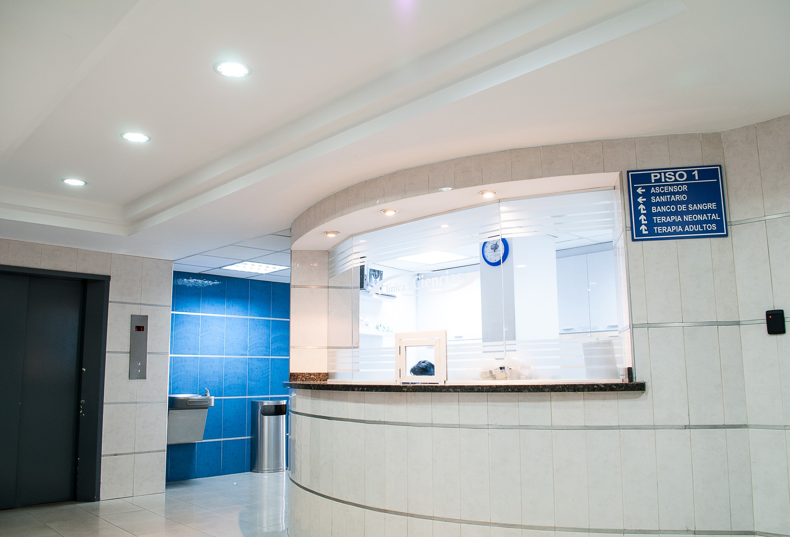

Наш реабилитационный центр – это уютное четырехэтажное здание площадью более 4000 квадратных метров. Территория центра облагорожена прогулочными дорожками, фонтаном, скамейками и мансардами для отдыха, где пациенты могут совершать прогулки в сопровождении помощников по уходу.
Мы находимся на правом берегу столицы, по адресу: улица Желтоксан 36/1, по соседству с детской музыкальной школой (въезд со стороны улицы Дукенулы).
Палаты центра повышенного комфорта с доступом к сети WiFi и телевидением. Функциональные кровати всегда можно настроить под любое удобное положение для пациента, к тому же вблизи каждой кровати установлена тревожная кнопка вызова персонала. В каждой палате есть своя душевая и туалет, оборудованные всеми необходимыми вспомогательными приспособлениями, поручнями и держателями. В летний зной можно воспользоваться кондиционером, для формирования приятного климата в палате.
В нашем центре комфортно чувствуют себя, как пожилые пациенты, так и молодые люди с любыми ограничениями в движении. Поскольку реабилитация — это этап перед возвращением в привычную жизнь, у пациентов должна быть возможность подготовиться к ней. Для этого мы создали ситуационные тренажеры - комнаты, которые имитируют действия пациента на улице (светофор и пешеходный переход), в магазине, булочной, на кухне, в ванной комнате и туалете. А также мы тренируем людей посадке и высадке в пассажирскую часть настоящего автомобиля.